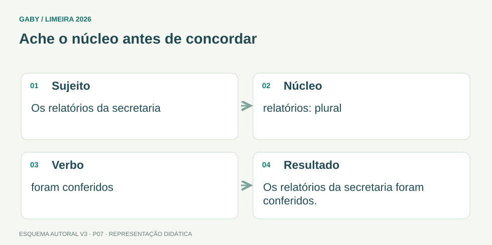

Objetivos do módulo
- Aplicar a concordância verbal com diferentes tipos de sujeito.
- Reconhecer verbos impessoais, especialmente haver e fazer.
- Aplicar concordância nominal em construções frequentes.
Ache o núcleo antes de concordar

Descrição em texto do esquema
- Sujeito: Os relatórios da secretaria
- Núcleo: relatórios: plural
- Verbo: foram conferidos
- Resultado: Os relatórios da secretaria foram conferidos.
Oficina visual · aplique o esquema
Complete: “A lista de documentos ___ atualizada.” Use “foi” ou “foram” e justifique.
Atividade autoral complementar da V3. Registre sua resposta; a resolução está no arquivo de gabarito e revisão.
1. Regra geral verbal
O verbo concorda em número e pessoa com o núcleo do sujeito. “Os documentos chegaram”; “A documentação chegou”. Antes de olhar o substantivo mais próximo do verbo, identifique o núcleo real do sujeito.
2. Sujeito composto
Sujeito composto anteposto tende a levar o verbo ao plural: “O diretor e a secretária assinaram”. Quando posposto, há construções em que a concordância pode variar conforme a norma e o contexto, mas em concurso é essencial reconhecer a forma plural como opção segura quando os núcleos são distintos.
3. Verbos impessoais
“Haver” com sentido de existir ou ocorrer é impessoal e fica no singular: “Havia problemas”, “Houve reuniões”. O verbo “fazer” indicando tempo decorrido ou fenômeno meteorológico também permanece no singular: “Faz dois anos”.
Em locução verbal, a impessoalidade se transmite ao auxiliar: “Deve haver vagas”, e não “devem haver”.
4. Concordância nominal
Artigos, adjetivos, pronomes adjetivos e numerais concordam com o substantivo. Em “documentos e certidões atualizados”, o adjetivo no masculino plural pode abranger substantivos de gêneros diferentes. Expressões como “é proibido/é proibida” dependem da presença de determinante: “É proibido entrada” (estrutura cristalizada) versus “É proibida a entrada”.
Exemplos resolvidos passo a passo
Exemplo 1
Situação: “A lista de documentos necessários ___ disponível.” Use está/estão.
Exemplo 2
Situação: “Devem haver vagas” está correto?
Exemplo 3
Situação: “Fazem três meses que estudo” está correto?
Pegadinhas e erros frequentes
- Concordar o verbo com o termo mais próximo, ignorando o núcleo do sujeito.
- Flexionar “haver” no sentido de existir.
- Flexionar “fazer” em indicação de tempo decorrido.
- Esquecer a concordância transmitida em locuções impessoais.
Resumo de prova
- Verbo concorda com núcleo do sujeito.
- Haver = existir → singular.
- Fazer = tempo decorrido → singular.
- Deve haver, pode haver, costuma haver.
- Adjetivo concorda com o(s) substantivo(s) a que se refere.
Exercícios do módulo
Resolva sem consultar o arquivo de gabarito. As questões são autorais e construídas para treinar os conceitos do edital.
- Houveram problemas.
- Houve problemas.
- Houveram uma reunião.
- Haviam uma vaga.
- Faz dois anos que estudo.
- Fizeram dois anos que estudo.
- Fazem dois ano que estudo.
- Fazem dois anos que estudo.
- é sempre impessoal
- não há sujeito
- concorda com candidatos
- concorda com relação
- Hão de haverem vagas.
- Devem haver vagas.
- Deve haver vagas.
- Podem haver um problema.
- O diretor e a secretária assinou.
- O diretor e a secretária assinaram.
- O diretor e a secretária assinastes.
- O diretor e a secretária assina.
- é
- proibido
- nenhum termo
- entrada
- Documento e certidões atualizada.
- Documentos e certidão atualizada sempre.
- Documentos e certidões atualizado.
- Documentos e certidões atualizados.
- correto apenas no singular
- errado porque existir é impessoal
- correto, pois existir concorda com o sujeito
- errado em qualquer contexto
- faltar é impessoal
- o sujeito “duas páginas” é plural
- há uma exceção aleatória
- o verbo concorda com objeto
- Haviam muitas pessoas.
- Houveram muitas pessoas.
- Hão muitas pessoas ontem.
- Havia muitas pessoas.
Quando terminar, abra Português 07 - Concordância Verbal e Nominal - Gabarito e Revisão.
Checklist de domínio
- ☐ Aplicar a concordância verbal com diferentes tipos de sujeito.
- ☐ Reconhecer verbos impessoais, especialmente haver e fazer.
- ☐ Aplicar concordância nominal em construções frequentes.
Meta do módulo: 80% ou mais nas questões, sem depender de consulta.
Referências e conteúdos auxiliares
- Presidência da República — Manual de Redação, 3ª ediçãoClareza, redação oficial, concordância, regência e pontuação. Referência de apoio; modelos locais podem ter regras próprias.
- Academia Brasileira de Letras — VOLPConsulta de grafia e classe gramatical. O vocabulário não é um dicionário de significados.
Referências externas de apoio consultadas para a V3 em 27/09/2026. A origem das questões é o material autoral do projeto; estes links não indicam que uma instituição publicou ou validou os exercícios. As páginas externas precisam de internet. Em informática, confira a versão do programa; em legislação, observe o recorte e as regras de atualização do edital.